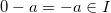
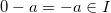

A linear combination of a and b is some integer of the form , where .
There's a very interesting theorem that gives a useful connection between linear combinations and the GCD of a and b, called Bézout's identity:
Bézout's identity: (the GCD of a and b) is the smallest positive linear combination of non-zero a and b.
Both Bézout's identity and its corollary I show below are very useful tools in elementary number theory, being used for the proofs of many of the most fundamental theorems. Let's see why it's true.
(I) Intuition: First I'd like to explain this (surprising at first sight) theorem intuitively. By defintion, any common divisor of a and b will divide for all . In particular, also divides any .
Now, assume we've found some small which isn't the GCD. But we've just said that divides all linear combinations, so it also divides x. Therefore, x can not be smaller than the GCD. In other words, the smallest positive linear combination can only be itself.
Corollary: An integer is a linear combination of a and b IFF it is a multiple of their GCD.
To prove Bézout's identity more formally, and along the way to see why the corollary is also true, let's first prove the following:
(III) Let I be a nonempty set of integers that is closed under addition and subtraction, and contains at least one non-zero integer. Then there exists a smallest positive element , and I consists of all multiples of b ().
Proof: I contains at least one non-zero integer. Then it definitely contains at least one positive integer, because it is closed under addition and subtraction. Assume we have for some  . Therefore and then also . Thus we have positive integers in I. According to the well-ordering principle, I has a smallest positive element which we'll call b.
. Therefore and then also . Thus we have positive integers in I. According to the well-ordering principle, I has a smallest positive element which we'll call b.
Now we'll want to show that . As usual, to prove equalities of sets, it will be shown that they contain one another.
is obvious - since I contains b and is closed under addition and subtraction, it contains all the multiples of b.
To prove we'll demonstrate that any element is a multiple of b. Using the division algorithm we write for some integers q and 0 <= r < b. But this means that (because I contains bq and c and is closed under subtraction and addition). However, recall that b was chosen to be the smallest positive element of I, so r must be equal to 0. Therefore c is a multiple of b, and we have shown that . Q.E.D.
Now back to Bézout's identity. We'll define:

This I is obviously non-empty and is closed under addition and subtraction (by its definition as a linear combination). Note, in particular, that it also contains a and b. By (III), I consists of all multiples of its smallest positive element, which we'll call d here.
To show that we have to show that d|a, d|b and if c|a and c|b then c|d. First, by definition d is a divisor of any element in I, so it also divides a and b. If c|a and c|b, say a=cq and b=cp, then:
So c|d, which completes our proof that d=(a,b). Q.E.D.
Regarding the corollary, it stems trivially from the definition of I and the proof above.